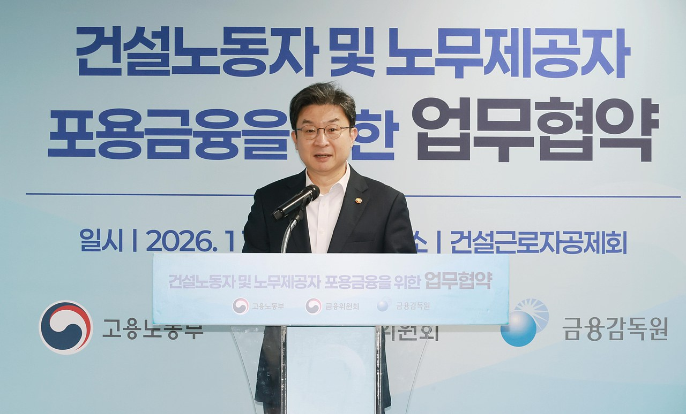
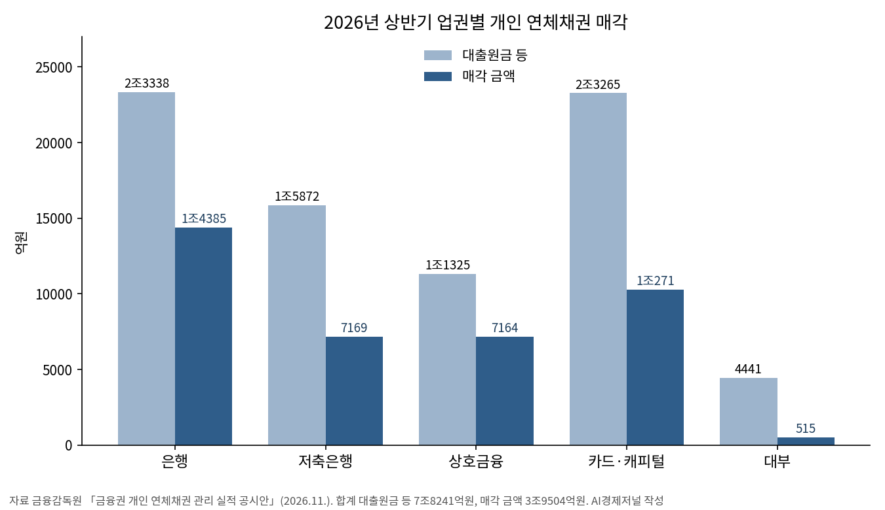
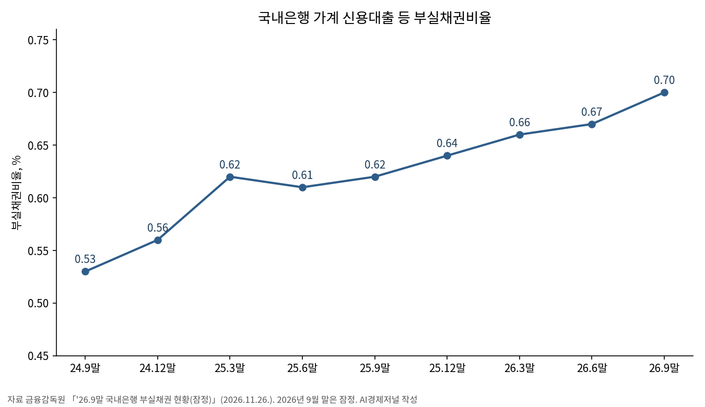

금융권 개인 연체채권 첫 공시, 상반기 92만7000건 3조9504억원에 매각
매각 건수 46.7% NPL 매입회사·대부업체 등 몫
소멸시효 완성·중도 소각 1조6200억원, 채무조정 13조8871억원
우리은행 온렌딩 방안, 평균 금리 10% 안팎
AI경제저널=김갑봉 기자 | 공시 대상 금융회사가 올해 상반기 개인 연체채권 92만7000건, 대출원금 등 7조8241억원어치를 3조9504억원에 팔았다. 금융위원회와 금융감독원이 26일 처음 공개한 연체채권 관리 실적이다.
공시 대상은 은행, 저축은행, 새마을금고를 뺀 상호금융, 카드·캐피털사, 상위 30개 대부업체다. 회사별 실적은 각 협회와 중앙회 누리집에 올라가고, 앞으로 반기마다 공시된다. 조회 화면은 은행연합회·여신금융협회가 먼저 갖췄다.
이억원 금융위원장은 이날 은행연합회에서 제8차 포용적 금융 대전환 회의를 주재했다. 저축은행중앙회장, 여신금융협회장, 대부금융협회장, 우리은행장 등이 참석했다.
회의에는 연체채권 공시안과 함께 건전성 규제 합리화 방안, 은행·저축은행 온렌딩 대출방안이 올랐다. 금융위는 내년 은행권부터 시행할 포용금융 종합평가에 연체채권 관리 실적을 반영할 계획이다.

매각 92만7000건, NPL 매입회사·대부업체 등 몫 46.7%
금감원 공시안을 보면 매각 금액은 담보채권 2조2077억원, 신용채권 1조4693억원, 기타 2734억원이다. 신용채권은 59만5003건으로 매각 건수의 64.2%다(AI경제저널 계산).
대출원금 등은 갚지 않은 대출원금 잔액에 기지급금 등을 더한 금액(OPB)이다. 신용채권은 대출원금 등 3조9784억원어치가 1조4693억원에 팔렸다. 신용채권의 대출원금 등 대비 매각 금액 비율은 36.9%다(AI경제저널 계산).
담보채권은 3조2529억원어치가 2조2077억원에 팔렸다. 담보채권의 같은 비율은 67.9%다(AI경제저널 계산). 금감원은 전체 매각가율(대출원금 등 대비 매각 금액 비율)을 50.4%로 밝혔다.
전업 부실채권(NPL) 매입회사·대부업체 등이 43만2472건을 사들였다. 매각 건수의 46.7%, 매각 금액의 71.8%다(AI경제저널 계산). 한국자산관리공사(캠코)는 36만6565건, 국내 금융회사는 12만7936건을 사들였다.
업권별 매각 금액은 은행이 1조4385억원으로 가장 많다. 카드·캐피털 1조271억원, 저축은행 7169억원, 상호금융 7164억원, 대부업 515억원 순이다.

건수로는 카드·캐피털이 55만3123건으로 가장 많다. 카드·캐피털이 판 채권 가운데 29만6324건이 신용채권이다.
채무자 쪽 반응도 확인했다. 채무자들의 새 출발을 지원하는 시민운동이라고 스스로 소개하는 롤링주빌리의 누리집에는 26일 오후 2시대까지 이번 공시를 다룬 글이 없었다. 최근 글은 11월 6일 업무협약 소식이다.
소멸시효 완성·중도 소각 1조6200억원
상반기에 소멸시효가 끝났거나 시효 전에 중도 소각한 채권은 35만5056건, 원금 1조6200억원이다. 이 가운데 82.0%인 1조3285억원이 시효 전에 소각됐다.
은행이 5998억원으로 가장 많고 이 가운데 88.3%를 중도 소각했다. 카드·캐피털은 5420억원, 대부업은 3783억원을 정리했다.
시효 완성 사유는 파산·면책 등 2만1574건, 사회적 배려자 1만9249건 순이다. 사회적 배려자는 사망자, 노령자, 기초수급자, 중증장애인 등이다.
채무조정 34만1000건, 개인채무자보호법 신청 1년 새 2.3배
같은 기간 채무조정은 34만1459건, 원금 잔액 13조8871억원이다. 은행 15만5557건, 카드·캐피털 13만7140건으로 두 업권이 건수의 86%다.
유형별(중복 집계)로는 변제기간 연장 21만2313건, 원리금 감면 11만4635건이 많다. 대부업체는 채무조정 1만5034건 가운데 96.1%가 원리금 감면이다.
상호금융의 채무조정은 5552건, 4조9641억원이다. 계좌당 8억9000만원으로 은행 4000만원보다 크다. 금감원은 상호금융 대출채권의 90% 이상이 담보채권이라고 설명했다.
2024년 10월 17일 시행된 개인채무자보호법에 따른 채무조정 신청은 올해 상반기 10만7613건이다. 지난해 상반기 4만6497건의 2.3배다(AI경제저널 계산).
승인율은 승인 건수를 승인·불승인 건수의 합으로 나눈 값이다. 지난해 상반기 86.8%, 하반기 88.9%, 올해 상반기 85.0%다.
은행 가계 신용대출 등 부실채권비율 0.70%
금감원이 같은 날 낸 「’26.9월말 국내은행의 부실채권 현황[잠정]」에서 가계 신용대출 등의 부실채권비율은 0.70%다. 부실채권비율은 고정이하여신이 총여신에서 차지하는 비율이다. 6월 말보다 0.03%포인트, 1년 전보다 0.08%포인트 높다.
이 비율은 2024년 9월 말 0.53%였다. 주택담보대출은 0.22%로 6월 말과 같다. 은행 전체 부실채권비율은 0.62%로 6월 말보다 0.01%포인트 낮다.

금감원은 개인사업자, 가계 신용대출 같은 취약 부문의 부실채권비율이 계속 오른다고 밝혔다. 적극적인 채무조정으로 취약차주의 상환능력 개선을 돕고, 회생이 어려운 부실채권은 적극 정리하도록 유도할 계획이라고 했다.
빚 탕감과 추심 규제 연구
윌 도비(Will Dobbie)와 제이 송(Jae Song)은 신용카드 연체 차주를 상대로 한 대규모 현장실험을 분석했다. 무작위로 고른 차주에게 당장의 상환액 감면과 몇 년 뒤의 이자 탕감을 함께 제안한 실험이다.
3~5년 뒤에 효력이 생기는 이자 탕감은 금융 상태와 노동시장 성과를 함께 개선했다. 당장의 상환액 감면에서는 긍정적 효과가 나오지 않았다. 논문은 2020년 『아메리칸 이코노믹 리뷰』에 실렸다.
빅타르 페다세유(Viktar Fedaseyeu)는 제3자 채권추심 규제법의 효과를 분석해 2020년 『저널 오브 파이낸셜 이코노믹스』에 실었다. 법이 엄할수록 추심업체 수와 연체 카드대출 회수율이 낮았다.
법이 엄할수록 새 리볼빙 신용한도 개설도 다소 적었다. 엄한 법 아래에서 소비자가 추심업체에 낸 소송은 적었지만 전체 소비자 민원 수 감소와는 관련이 없었다.
저축은행 중신용자 금리 14.32%, 온렌딩 방안 평균 10% 안팎
금융위 자료에서 7월 말 저축은행 중신용자 신용대출 금리(잔액 기준)는 14.32%다. 은행 중신용자 5.99%보다 8.33%포인트 높다(AI경제저널 계산). 금융위는 중신용자 구간부터 금리가 급하게 오르는 현상을 금리단층이라고 불렀다.
우리은행이 낸 온렌딩 방안은 은행이 저축은행에 낮은 금리로 돈을 대고 저축은행이 중저신용자에게 빌려주는 구조다. 대상은 은행 새희망홀씨 기준을 따른다.
연소득 4000만원 이하, 또는 5000만원 이하이면서 신용평점 하위 20%인 사람이 대상이다. 한도는 최대 3500만원이다.
우리은행은 최종 대출금리를 평균 10% 안팎으로 제시했다. 대출 기준금리가 10월 말보다 0.5%포인트 오르면 10.5%로 조정하는 방식이다. 금융위는 기존 저축은행 대출보다 약 3~5%포인트 낮을 것으로 내다봤다.
금융위는 26일 기획형 규제 샌드박스 사업자 모집을 시작했다. 은행법·금융지주회사법 특례를 주기 위해서다. 금융위는 내년 초 이 서비스를 혁신금융서비스로 지정할 계획이다. 상품은 내년 1분기 안에 내놓는 것이 목표다. 방안대로면 은행의 온렌딩 공급액은 새희망홀씨 실적으로 인정된다.
건전성 규제 9개 과제, 내년 1분기 시행 계획
금융위·금감원은 건전성 규제 9개 과제도 내놨다. 소상공인시장진흥공단 보증부 대출의 위험가중치는 20%에서 0%로 낮추기로 했다. 위험가중치는 금융회사가 쌓아야 할 자본을 정할 때 대출액에 곱하는 비율이다.
서민금융진흥원 보증부 대출에 보험사가 적용하는 위험계수(보험사가 쌓을 자본을 정하는 비율)는 8%에서 2.5%로 낮추기로 했다.
금융회사가 자체 채무조정한 요주의 여신은 6개월 이상 정상 상환하면 정상 여신으로 분류하기로 했다. 요주의 여신은 자산건전성 분류에서 정상 바로 아래 단계다. 지금은 1년 이상 정상 상환해야 정상 여신이 된다.
은행의 대안신용평가모형은 규제모형으로 승인하기로 했다. 지금 대안신용평가모형은 여신심사에만 쓰인다. 규제모형은 금감원 승인을 받아 자본비율·충당금 산출에도 쓰는 모형이다.
금융위 자료는 이 승인으로 한 은행의 중저신용자 대출 평균 위험가중치가 120%에서 80~100%로 내려갈 것으로 잠정 예상했다. 금융위는 감독규정·시행세칙 개정과 해석을 거쳐 각 과제를 내년 1분기 안에 시행할 계획이다.
참고문헌
- 금융위원회 은행과·보험과·중소금융과·서민금융과, "건전성 규제, 금융 공급, 연체채권 관리체계를 종합적으로 정비해 일회성이 아닌, 지속가능한 포용금융을 실현하겠습니다", 2026.11.26., https://www.korea.kr/briefing/pressReleaseView.do?newsId=156790921
- 금융감독원, 「금융권 개인 연체채권 관리 실적 공시안」(제8차 포용적 금융 대전환 회의 안건③), 2026.11., https://www.korea.kr/briefing/pressReleaseView.do?newsId=156790921 붙임
- 우리은행, 「은행-저축은행 협업 포용 온렌딩 대출방안」(제8차 포용적 금융 대전환 회의 안건②), 2026.11., https://www.korea.kr/briefing/pressReleaseView.do?newsId=156790921 붙임
- 금융감독원 은행리스크감독국 건전경영팀, "’26.9월말 국내은행의 부실채권 현황[잠정]", 2026.11.26., https://www.fss.or.kr/fss/bbs/B0000188/view.do?nttId=250026&menuNo=200218
- 금융위원회 디지털금융총괄과·은행과·중소금융과, "포용금융 활성화를 위한 기획형 샌드박스 사업자 모집 개시", 2026.11.26., https://www.fsc.go.kr/po010104
- Dobbie, W., Song, J., 「Targeted Debt Relief and the Origins of Financial Distress: Experimental Evidence from Distressed Credit Card Borrowers」, 『American Economic Review』 110권 4호, American Economic Association, 2020, 984~1018쪽, https://doi.org/10.1257/aer.20171541
- Fedaseyeu, V., 「Debt Collection Agencies and the Supply of Consumer Credit」, 『Journal of Financial Economics』 138권 1호, Elsevier, 2020, 193~221쪽, https://doi.org/10.1016/j.jfineco.2020.05.002
[사진 출처]
- [사진 1] 금융위원회 사진뉴스 「건설근로자 및 노무제공자 포용금융을 위한 업무협약식」(2026.11.11.), https://www.fsc.go.kr/no010106/88122
※ 이 기사는 인공지능기자 위민아이(Wemin_AI)와 협력해 작성했습니다.
관련기사
- [소상공인] 매출 다섯 분기 만에 전년 대비 감소, 대출 연체 16조4000억원
- 가계대출 한 달 새 6조4000억원 증가, 신용대출 다시 늘어
- [가계부채 브리핑②] 금리 인상기 가계·기업 대출금리 격차와 회사채 대신 늘어난 대기업 은행 대출
- [가계부채] 다시 늘어난 빚 6조4000억원과 0.61%포인트 오른 대출 이자
저작권자 © AI경제저널 무단전재 및 재배포, AI학습 및 활용 금지